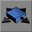
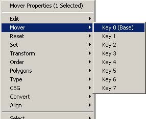
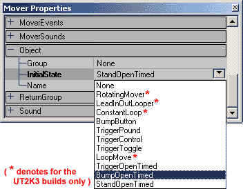
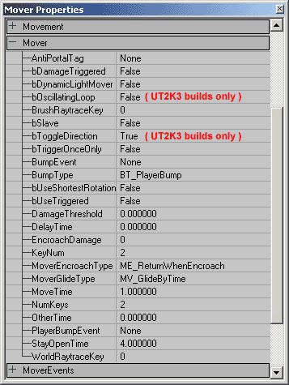
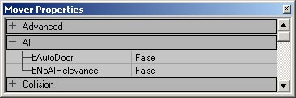

UDN
Search public documentation:
MoversTutorial
日本語訳
한국어
Interested in the Unreal Engine?
Visit the Unreal Technology site.
Looking for jobs and company info?
Check out the Epic games site.
Questions about support via UDN?
Contact the UDN Staff
한국어
Interested in the Unreal Engine?
Visit the Unreal Technology site.
Looking for jobs and company info?
Check out the Epic games site.
Questions about support via UDN?
Contact the UDN Staff
Movers Tutorial
Document Summary: A guide and reference to setting up Movers. Document Changelog: Last updated by Jason Lentz (DemiurgeStudios?) to clairify ReturnGroup and bSlave settings. Original author was Tony "Wolf" Garcia (UdnStaff).Creating Movers.
A Mover is a special StaticMesh that can move during game play. With Movers you can create opening doors, elevators, moving platforms, rotating gears and fans, or pretty much anything that moves along a predetermined path. There are essentially four steps in creating your mover: Selecting and placing the StaticMesh, setting the KeyFrames, assigning the activator, and applying any special mover effects you might want. This document will guide you through these steps and reveal how to create each type of Mover and it assumes you know your basic way around the editor and are able to create and add StaticMeshes.Selecting a Mesh
Movers can only be created with static meshes, so you must first open a StaticMesh Browser and select the name of the StaticMesh you wish to use. Then to place the Mover in the world, click on the "Add Mover" button.
Then to place the Mover in the world, click on the "Add Mover" button. 
The Mover will then appear at the position of the builder brush. The Mover will look like any other static mesh except its brush will be purple. Once you have the Mover where you want it, you are then ready to set the KeyFrames of that Mover.
Once you have the Mover where you want it, you are then ready to set the KeyFrames of that Mover.
Setting KeyFrames
KeyFrames are the different positions that the mover will transition between. The base KeyFrame, or KeyFrame 0, is by default set to be the position of the mover before the other KeyFrames are set, so to set KeyFrame 0 just place the mover where you want it to start. To assign the first position you want to move it to, right click on the mover and pull down the mover option.
By selecting "Key 1" you are recording the location and orientation you want to move the KeyFrame to for its first new position. Be aware though that it is actually recording the total rotation of that KeyFrame not just the final orientation so that if you rotate it 480� it will not just turn 120� but rather it will make a full 360� revolution and continue for another 120�. To create more KeyFrames just repeat this process by selecting the KeyFrame you want to assign by right clicking and then moving the Mover to the desired position of that KeyFrame. If you want to reset the position of a KeyFrame, you can do so by reselecting the KeyFrame by right clicking and then moving the Mover to the correct KeyFrame position. Once you've assigned your KeyFrames, you can check them by right clicking on the mover and selecting the KeyFrame you wish to see (just as if you were going to assign that KeyFrame). If you already assigned that KeyFrame, the mover will then jump to that position. If it did not, then simply move it to that position and you will have just assigned that KeyFrame. Alternatively, KeyFrames may be assigned or checked through the "Movers" tab in the "Mover Properties" window. Just type in the number of the KeyFrame you wish to set, and then move the Mover to the position of the desired KeyFrame. After your KeyFrames are all assigned then you must let the editor know how many of your KeyFrames you wish to use. Open the Properties window of the Mover, expand the "Mover" tab, and set "NumKeys" to how many KeyFrames you wish to use. If you have created more KeyFrames than you care to use, this will prevent the Mover from going to your extra KeyFrames.
Assigning Activators
Now you've got your Mover and the Mover knows where to go, but it doesn't know when it should go there. You must first assign an activator and the first place to do this is in the "Properties" window under the "Object" tab in the "InitialState" pull down.
These settings determine what type of Mover you'll have and how it will react to things in the world. Many of the Mover types require Triggers to be placed in to the world to activate them. For more information on Triggers, see the TriggersTutorial doc. Below are descriptions of what each setting does:- None = The Mover will not be activated. It will just act as regular StaticMesh (not really useful).
- RotatingMover = The Mover will toggle between rotation directions when it is triggered. This feature is only available in the UT2K3 builds.
- LeadInOutLooper = When triggered once, the Mover will begin cycling through all of its KeyFrames and then looping, but when triggered a second time, the Mover returns to it's KeyFrame 0 position and remains at rest until triggered again. This feature is only available in the UT2K3 builds.
- ConstantLoop - The Mover will constantly loop through its KeyFrames from the moment the game starts. This feature is only available in the UT2K3 builds.
- BumpButton = When bumped, the Mover will move through its KeyFrames without pausing, and then return to its KeyFrame 0 by reversing the KeyFrames and then remain at rest until bumped again.
- TriggerPound = The Mover will advance through its KeyFrames and then return in reverse order without pausing for as long as the trigger is being activated. Once out of range of the trigger, the Mover will automatically return to its KeyFrame 0 position through reversing the order of KeyFrames.
- TriggerControl = The Mover will advance through its KeyFrames until it reaches its final KeyFrame without. As long as the trigger is being activated the Mover will remain in its final position but once out of range of the trigger, the Mover will automatically return to its KeyFrame 0 position through reversing the order of KeyFrames.
- TriggerToggle = When triggered, the Mover will advance to its last KeyFrame and remain at rest. When triggered again it will return in the reverse order of KeyFrames to its KeyFrame 0 position and remain at rest. If it is triggered while in motion to the first or last KeyFrame it will stop for the first trigger and then reverse course for the next trigger.
- LoopMove = When the trigger is being activated the Mover will advance through all of its KeyFrames without pausing and then loop back to KeyFrame 0 to repeat the movement. Once the trigger is no longer active, the Mover will stop immediately. This feature is only available in the UT2K3 builds.
- TriggerOpenTimed = The Mover will move when activated by a trigger and after the StayOpenTime (found in the Mover tab) is reached, the mover will return to its KeyFrame 0 position through reversing the order of KeyFrames.
- BumpOpenTimed = The Mover will move when a player bumps into it and after the StayOpenTime (found in the Mover tab) is reached, the mover will return to its KeyFrame 0 position through reversing the order of KeyFrames.
- StandOpenTimed = The Mover will move when a player stands on it and after the StayOpenTime (found in the Mover tab) is reached, the mover will return to its KeyFrame 0 position through reversing the order of KeyFrames.

- AntiPortalTag - See below section on Antiportal Movers
- bDamageTriggered = If set to True, the Mover can be activated by weapons fire. Note that the Mover's InitialState must be set to a trigger activated state. Each state will have a different effect if the Mover is set to be Damage Triggered.
- TriggerPound = Activates the Mover into a constant loop, but with each successive triggering, the Mover will return to its last KeyFrame.
- TriggerControl = Once triggered, it will advance to its last KeyFrame and remain there for the remainder of the game.
- TriggerToggle = The first trigger will advance it to its last KeyFrame and remain there until a second triggering returns it. Each time the Damage Threshold is reached, the Mover will reverse directions. This feature is only available in the UT2K3 builds.
- TriggerOpenTimed = This activates to Mover to advance through all of its KeyFrames, wait at its last KeyFrame, and then return to its base KeyFrame. Once returned, it can be triggered again.
- bDynaicLightMover = If set to True, light will show on the Mover as it passes through them.
- bOscillatingLoop = If set to True, and the Mover is set to ConstantLoop in the Object tab, then the Mover will travel sequentially through its KeyFrames forwards then in reverse. Otherwise after its last KeyFrame it will return to its KeyFrame 0 position to continue the loop. This feature is only available in the UT2K3 builds.
- BrushRaytraceKey = This determines which KeyFrame position is used to render the lighting on the Mover.
- bSlave = If set tor True AND the tag of this Mover is the same as another (Mover B let's say), it will follow the same KeyFrames as Mover B when Mover B is triggered. Note that if the first mover is triggered on it's own, it will follow it's own KeyFrames and can still be triggered by Mover B. If both are triggered at once, the Mover may not return to its initial position.
- bToggleDirection = If set to True, the Mover will start out at its designated start position (as defined by KeyNum below) but when activated, it will travel in reverse order through its KeyFrames.
- bTriggerOnceOnly = If this is set to True, the Mover can only be activated once per game.
- BumpEvent = In this field you can assign an event to be called when the Mover is activated.
- BumpType = This is the type of actor which is allowed to trigger the BumpEvent.
- bUseShortestRotation = If set to True, it will use the shortest rotation instead of the rotation used to orient the Mover in its KeyFrames (i.e. if the Mover was rotated 315� clockwise in the editor, during the game the Mover would rotate 45� counter-clockwise to achieve the same final position.
- bUseTriggered = This functionality is not currently functionality
- DamageThreshold = This sets the threshold of damage required to activate the Mover. Note that the damage taken by the Mover does not accumulate and is reset after each projectile hit, so some projectiles may have no effect on the Mover at all if the threshold is too high (such as Assault Rifle Bullets or the Chain Gun's primary fire).
- DelayTime = This sets the amount of delay time before the Mover actually begins to move but after the Mover has been triggered.
- EncroachDamage = This sets the amount of damage that the Mover does when it collides with an actor.
- KeyNum = This sets the Mover to a specific KeyFrame just as if you were right clicking the Mover to set its KeyFrames initially. It also determines the starting KeyFrame of the Mover once the level is run. Note that you can set more than 8 KeyFrames using this field.
- MoverEncroachType = This sets the type of reaction the Mover will have when encroached by an actor.
- ME_StopWhenEncroach = Mover will stop when it hits an actor
- ME_ReturnWhenEncroach = Mover will return to its previous position when it hits an actor (the default setting).
- ME_CrushWhenEncroach = Mover will crush the actor it hits.
- ME_IgnoreWhenEncroach = Mover will pass through the actor (although it will still apply any EncroachDamage that is set).
- MoverGlideType =w This sets the type of movement the Mover will have between KeyFrames.
- MV_MoveByTime = The Mover will move at a constant rate between KeyFrames.
- MV_GlideByTime = The Mover will smoothly accelerate and decelerate between KeyFrames.
- MoveTime = This is the amount of time the Mover takes to move between each KeyFrame.
- NumKeys = This sets the total number of KeyFrames that the Mover will use (starting at 0).
- OtherTime = This sets how long the Mover remain at its highest KeyFrame if its InitialState is set to TriggerPound.
- PlayerBumpEvent = This is the Event that is called when a Player bumps the Mover.
- StayOpenTime = This sets the amount of time the Mover remains in its last KeyFrame before closing.
- WorldRayTrace = This determines which KeyFrame position will be used to cast the Mover's shadow on to the rest of the world geometry.
Additional Mover Effects
Triggering Events with Mover
Not only can Movers be triggered to do actions on their own, Movers can trigger other events in the level. To set these events open the MoverEvents tab. These events can call anything from TriggerLights to scripted events, or even other Movers. Below is a description of each event type:
These events can call anything from TriggerLights to scripted events, or even other Movers. Below is a description of each event type:
- ClosedEvent = This Event is called when the Mover arrives at its last KeyFrame.
- ClosingEvent = This Event is called when it starts moving towards its last
KeyFrame. - LoopEvent = If the Mover's InitialState is set to ConstantLoop, then it will call this Event when it reaches its first and last KeyFrame.
- OpenedEvent = This Event is called when the Mover arrives at its first KeyFrame.
- OpeningEvent = This Event is called when the Mover starts its first KeyFrame.
Special Mover Sounds
Movers also have special sound settings. Beneath the following diagram are descriptions of each of the settings.
- ClosedSound = This sound is played when the Mover arrives at its last KeyFrame.
- ClosingSound = This sound is played when it starts moving towards its last
KeyFrame. - LoopSound = If the Mover's InitialState is set to ConstantLoop, then it will play this sound when it reaches its first and last KeyFrame.
- OpenedSound = This sound is played when the Mover arrives at its first KeyFrame.
- OpeningSound = This sound is played when the Mover starts its first KeyFrame.
Mover AI Settings
Under the AI tab there are additional settings specific to Movers. The AI settings effect
- bAutoDoor = If this is set to True, a Door path node is automatically generated for that mover.
- bNoAIRelevance = All Movers have an appropriate NavigationPoint associated with them. If this is set to True, the NavigationPoint will be disabled.
Nested Movers
These settings will allow you to control other Movers when this Mover is activated. First you must have two movers. Set the following properties on the first Mover:
First you must have two movers. Set the following properties on the first Mover: - Event --> Tag = InsertMoverNameHere
- ReturnGroup --> bIsLeader = True.
- ReturnGroup -- > InsertMoverNameHere
Antiportal Movers
For doors, and other moves that obscure parts of geometry, you can attach an antiportal to move along with the door. This is an excellent way to prevent a room or area from rendering only when a door is closed. To set up anti-portals in this way:- Create an anti-portal where your door opening is and where your mover will open and close as a door.
- In the anti-portal actor properties, in the Object section, set InitialState to TriggerToggle or TriggerControl.
- Give the anti-portal a Tag which will be used later.
- Place your mover and set that up to trigger how you want.
- in the mover's properties in the Mover section set AntiPortalTag to the tag you gave the anti-portal(s) above.